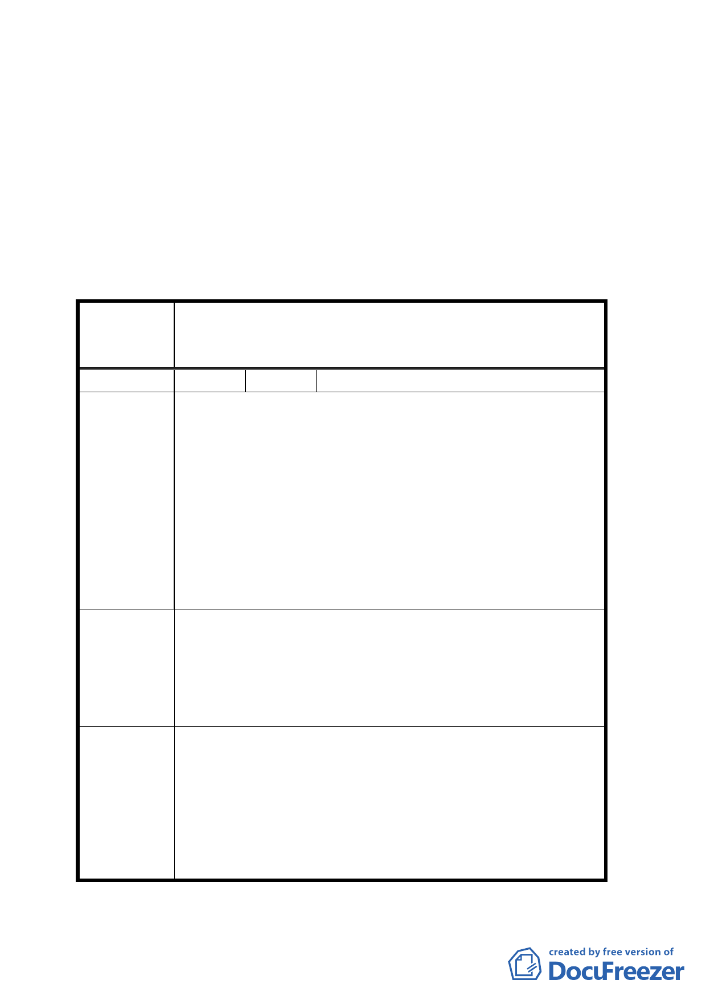

通過，另外計畫範圍採適用『臺北市建築物增設室內公共
停車空間鼓勵要點』辦理。
二、本計畫案名修正為「修訂臺北市南港經貿園區部分住宅區
土地使用分區管制規定案」。
臺北市都市計畫委員會公民或團體所提意見綜理表
修訂臺北市南港經貿園區特定專用區商業區（供商
案 名 務設施使用）C10、C11 街廓及部分住宅區土地使
用分區管制規定案
編 號 １ 陳情人 江輝吉
一、臺北市都市更新鼓勵地區––南港經貿園區特定專用
區 R13 街廓自民國九十一年七月十二日公告至今已有
二年，由於土地所有權區分複雜，舊有建物興建密集，
違章眾多環境品質低落，雖經土地所有權人努力整
陳情理由
合，在更新改建上實欠缺有利獎勵誘因
二、R13 街廓字 91 年 7 月 12 日公告，至 94 年 7 月 11 日
止凡於公告日起三年內提出都市更新者僅有百分之五
開發時程容積獎勵；由於誘因過低至今未有任何一個
更新案提出申請。
建議辦法
建議在原期限 94 年 7 月 11 日公告滿三年前，凡依法提出
更新申請者，應將開發發時程獎勵與 R1、R16、R17 之百
分之十五時程獎勵相同，相信在不改變原目標時間前提
下，期能完成更新
R13 街廓由工業區變更為住宅區並未要求回饋，而開發時
委員會決議 程獎勵訂為五年，仍請儘速辦理都市更新，所提建議歉難
採納。
一四